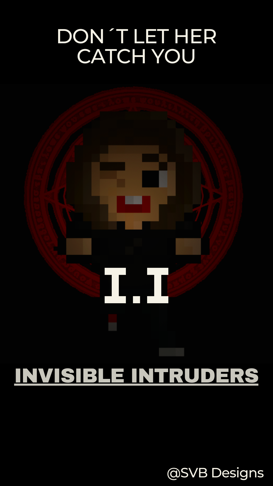
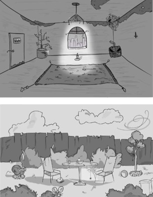
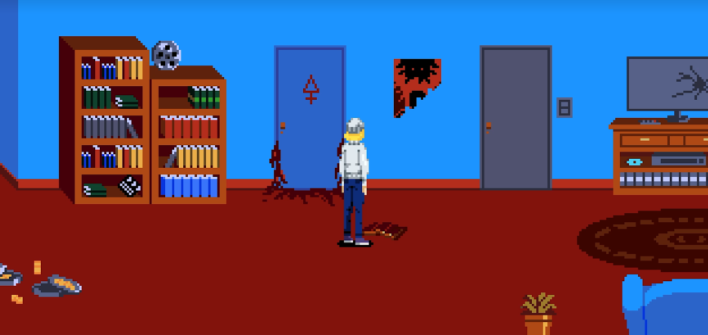
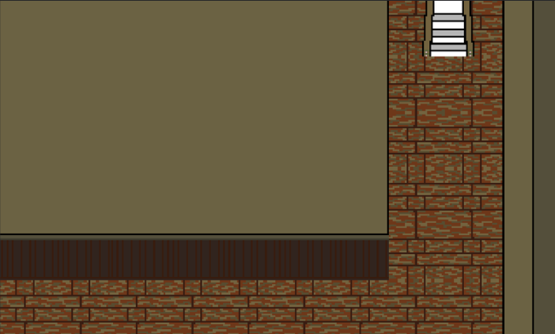
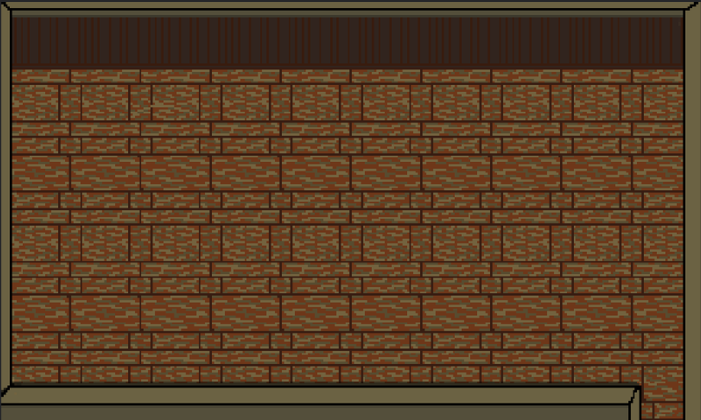
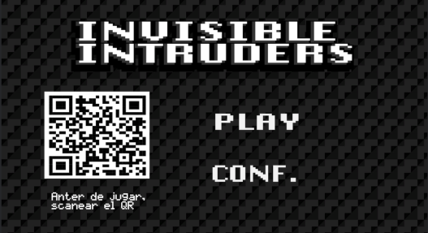
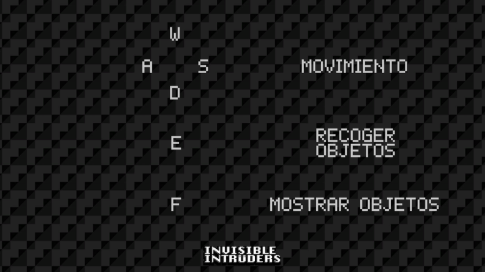
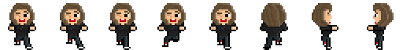
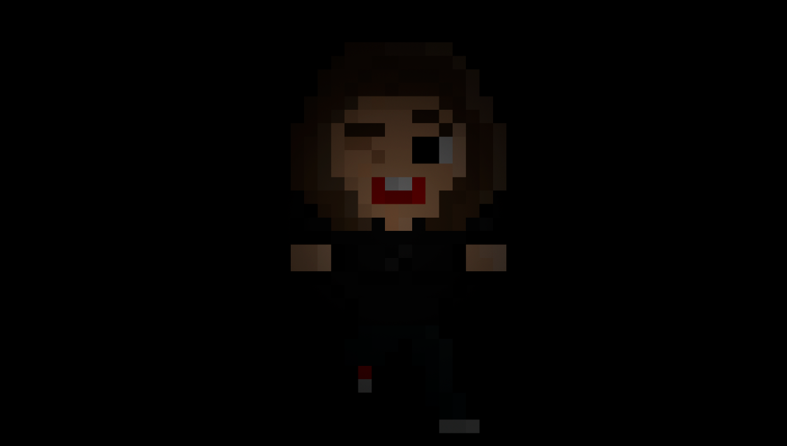

Narrativa ambiental
El entorno y los objetos revelan la historia sin depender de explicaciones extensas.
03 / GAME DESIGN · PLAYER EXPERIENCE · UNITY
Una experiencia de terror donde la exploración y la narrativa ambiental construyen tensión de forma progresiva.

01 El reto
El jugador descubre la historia mientras aprende a moverse, buscar e interpretar el entorno.
El juego plantea explorar una casa abandonada, encontrar notas de un ritual y sobrevivir a una presencia sobrenatural que se vuelve más peligrosa con el avance.
El diseño combina progresión, narrativa ambiental e interacción. La intención es mantener la curiosidad y aumentar la tensión sin perder claridad sobre el objetivo.
Participé en diseño de gameplay e implementación de sistemas de movimiento, interacción, coleccionables y lógica de juego.
02 Referentes y dirección
Análisis de referentes como Resident Evil 7, Outlast y P.T., moodboard y exploración de conceptos.
El entorno y los objetos revelan la historia sin depender de explicaciones extensas.
La amenaza y las posibilidades limitadas de defensa orientan la emoción del jugador.
La exploración inicial ayuda a familiarizarse con el entorno antes de aumentar el peligro.


03 Experiencia del jugador
Recorrer el entorno y orientarse.
Localizar y recoger las notas.
Responder a la amenaza.
Descubrir nuevas partes del relato.
Presentarla antes de que la oscuridad sea el principal obstáculo facilita comprender su utilidad.
La composición, la iluminación y la ubicación de notas ayudan a orientar la exploración.
Encontrar notas aporta contenido narrativo y permite progresar, conectando acción y objetivo.
Reducir la presencia del HUD conserva la atención en el espacio y la amenaza.


04 Implementación
Control del jugador, detección de objetos y acciones implementadas con C#.
Notas, objetivos y lógica de avance para conectar exploración con narrativa.
Comportamiento del enemigo e iluminación orientados a la tensión progresiva.
05 Galería
Una selección de recursos del juego. Puedes ampliar cada imagen.




RECORRIDO EN VIDEO
Exploración, atmósfera e interacción en el gameplay del proyecto.
Ver gameplay en YouTube (abre en otra pestaña)06 Aprendizajes
El proyecto permitió relacionar mecánicas, diseño de niveles y narrativa con la experiencia del jugador. Mantener la tensión implica revisar también la orientación y la comprensión del objetivo.
Una siguiente evaluación puede observar si el jugador entiende los controles, identifica qué debe buscar y relaciona las notas con su progreso.
Profundizar el comportamiento del enemigo, el sonido y las posibilidades de exploración.
Observar dudas de navegación, comprensión de objetos y señales necesarias para avanzar.